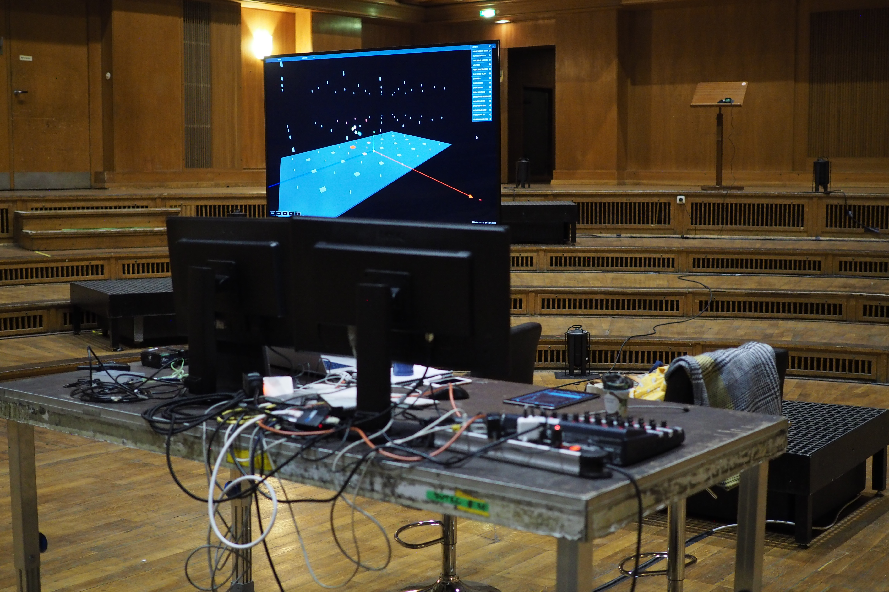
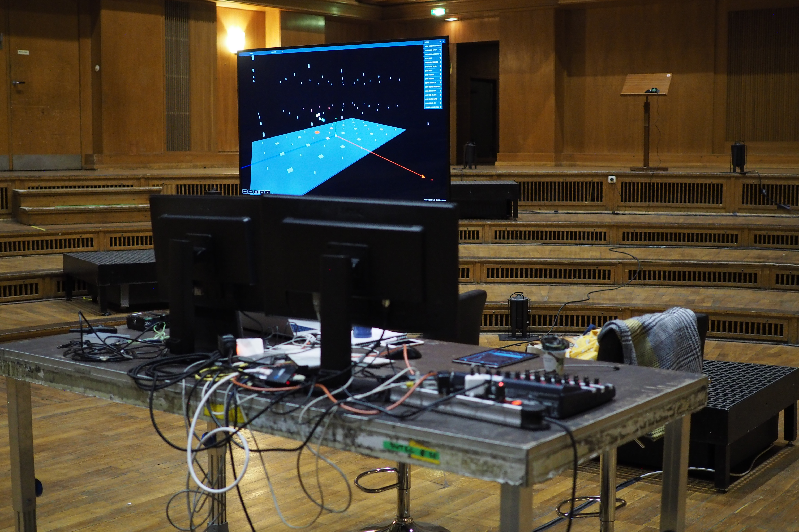
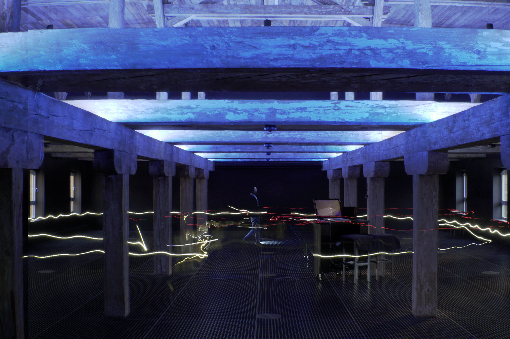
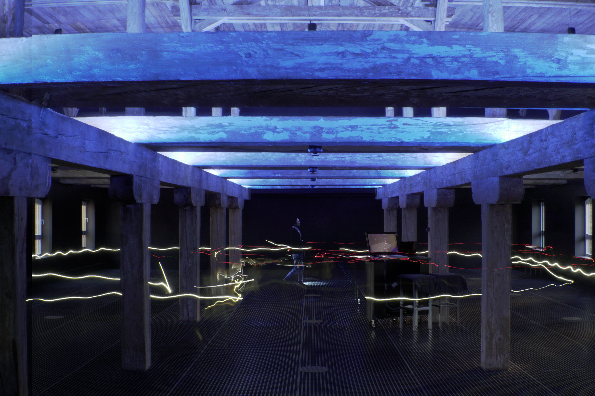

Superposition: Sound studies in space and time
It is natural to assume that the physical world as we perceive it is an absolute manifestation of reality. Yet through our subjective lens and senses, it is impossible to experience reality in absolute terms. Quantum theory suggests that the underlying structure of the universe is comprised of a set of probable states existing in superposition; and, that only in the presence of a conscious observer does this cloud of probable events collapse into singularity. These potential events are filtered through our perceptions, and manifested into a subjective reality by our consciousness to make up what we know to be real.
The dimension of time is crucial to our understanding of patterns and understanding of context. It is an aspect of sound which might be considered an intrinsic, objective physical property from which we cannot escape: for example the attribution of meaning to sound is intrinsically bound by time. But if we could escape from the confines of time, what would that mean for our understanding of the world? Could we tease out hidden information or extract new meaning from sounds when experienced “outside” of time?
Superposition is an interactive spatial sound installation developed and exhibited at the Spatial Sound Institute that attempts to address these questions. Position tracking devices are shared among audience members as they explore the space; those with the device have the power to control the soundscape as they freely move through the installation. Sound exists as an omnipresent entity, as sonic potential, in the room wherein the temporal domain is mapped to the spatial domain. While enveloped in their own personal sound space, the participant is bestowed the power to control the soundscape. With each changing position, their presence reveals sonic energy representing a small slice of time; they become an observer with the ability to manifest reality from his or her own perspective and examine sounds outside the constraints of time.
As observers move and interact with one another, a narrative emerges from multiple temporal perspectives that intertwine sonically and spatially to form an ever evolving soundscape. Sound emanates from the observers who cannot escape from the subjective sound bubble in which they are immersed. The observer’s subjective perspective becomes an objective reality to those around them; those without control are able to experience a spatial landscape magically unfolding around them. Throughout the installation each participant has the opportunity to shift between these two roles.
“Quantum listening—listening in more than one state simultaneously. If you are not listening the music is not happening. A conscious observer is necessary. Conscious observation affects sound.”—Pauline Oliveros1
SPATIAL SOUND INSTITUTE
As an artist in residence from August to October 2018, I had the privilege of researching and developing my work at the Spatial Sound Institute (SSI). The SSI is a research and development centre for spatial sound, exploring new possibilities in experiencing sound under the theme Ecology of Listening. Housed with a 4DSOUND system consisting of 36 omnidirectional speakers and 6 subwoofers spanning 3 floors, sound can be spatialized anywhere around the room with the control of a software interface.
Much in line with the institute’s theme, one of the main goals of this project was to present an experience encouraging participants to enrich their relationship to sound and to engage in another form of listening. One aspect of the installation is to explore and reexamine the quality of sound as a spatial object by deconstructing its temporal qualities. The installation creates an environment in which a composition lives at once in its entirety in space that is not confined to time. Time is projected onto the XY-plane; one must move to "hear" sound as a dynamic object changes through time and space. It is up to them, based on their behaviour, how to study the many facets of sound: to perceive from the microscopic perspective through subtle shifts in position, or understand from a macro level using grand gestures, aligning closely to 'temporal' listening, though not necessarily 'in time'.
In The Ecological Approach to Visual Perception2 by James J. Gibson, in the context of visual perception he states "[...]we must perceive in order to move, but we must also move in order to perceive". Gibson's theory is applicable to the environment of the installation with regards to auditory perception, which seeks to invigorate in the listener a stronger connection between the body and our capacity to listen.
4DSOUND
The 4DSOUND technology is the driving force behind the work and research at the Spatial Sound Institute. Its intuitive software interface offers artists a wide palette of creative tools to shape and mold sound in space. But it is more than an interface—it becomes an instrument connected to the space in which listeners actively participate in the composition itself. Its graphical 3D interface allows artists the ability to visualize and choreograph a sound object's movement through space. Virtual sound environments can be constructed that otherwise cannot physically exist, yet at the same time, it is only experienced in physical reality. To fully experience the pieces created on the 4DSOUND system, participants are encouraged to move and walk around. Small changes in head movement and position can create subtle or large shifts in sound perception. Using spatial sound as the medium removes visual distraction often associated with modern technological tools, allowing immersion to enter a receptive state for deep listening.
THE INTERACTIVE SYSTEM
The installation’s overarching interaction is simple: two observers carry a tracking device to actively control the soundscape by revealing sound at their position and point in time. Other participants not directly connected to the system become observers of the tracked observers; their interaction with the piece resides in the physical and social realm rather than within the system itself. Physically, the scene is affected by the trackers acting as global causal agents, yet each participant experiences the piece from a wholly subjective perspective due to the time differences relative to the sound source and listener. The trackers present an opportunity for an observer to understand the powerful role they play in creating the scene, and to reflect the ways in which the external environment affects their internal experience, which in turn informs the actions and behaviours expressed to affect the outer world in a perception-action loop.
A unit of space represents a unit in time, essentially reducing sound into small units allowing listeners to perceive sound primarily in the spatial rather than temporal domain. Time then becomes subjected to the will of the observer that allows many facets of a sound object to be studied from different spatial perspectives. The understanding of sound is now intrinsically bound to space rather than time. In other words, in order to listen and understand the sonic context, one must move the body through space
From the perspective of embodied cognition, a subjective bodily experience is the necessary basis for experiencing empathy and appreciating beauty, while studies in neuroscience show evidence of a mirror neuron system that describes the mechanism by which one can observe another's actions and respond in a congruent way3. As participants move in response to actions of others and to the sound environment, an improvisatory dance begins to emerge through imitation, call and response, and personal flourishes reflective of personality, all of which develop as the piece progresses to establish a dialog using kinetic interplay. Over time, a social bond slowly begins knit into a fabric that is strengthened by kinesthetic resonance4.
The main challenge in the design was to consider the details in sonic perception, spatialization, and interaction between tracked observers, such that their aggregate effect on the aesthetics of the soundscape also maintained the interest of non-tracked participants. The process involved many variables to consider the design of this system, a few of which are highlighted in the following sections.
Saal 1, Funkhaus
ARCHITECTURE
During my residency, I had the opportunity to work with the 4DSOUND system in two different spaces: first at the Spatial Sound Institute, then at Saal 1, Funkhaus in Berlin, one of the largest recording spaces in Europe used for symphonic recordings during the GDR era. Each space had its own unique spatial qualities that informed the way one moves in space. Spatially, choosing a path that maps linearly to time with a start and end point depended on location of the entrance of the room and considering how one might naturally explore the space. In this regard, the mapping is specific to a location, but may be adapted to other spaces.
Acoustically, the differences in room size, architectural features, and speaker placement all had obvious effects on sound quality, however these qualities did not affect my overall sound design process. The most striking distinction between working in the two spaces, for me at least, has to be the visceral impact on the body. At Funkhaus, the hall's grand reverberance and higher speaker placement energizes sound with an iridescent and translucent quality. The huge volume offers greater dynamic range, that while dramatic, is also more forgiving in blurring sonic details. Meanwhile, the intimate quality at SSI lends itself to closer listening where the finest details are laid bare, ultimately granting the artist tighter control over sound quality and spatial effects.
SOUND DESIGN
Coming into this project I had a few unknowns concerning sound design, the main being, how to generate sounds “outside of time”. I initially approached the problem by testing out an analysis-synthesis technique to recreate sound from any point in time by breaking down a sound buffer into overlapping time windows. Each window undergoes a fast Fourier transform to determine amplitude and phase information for a given frequency, then finally the signal is reconstituted with sinusoidal synthesis, allowing the frequency content to be maintained at any speed of playback. After experiments failed to synthesize something that didn't exhibit an unpleasant synthetic metallic sound, I quickly decided I needed another approach.
In Formalized Music: Thought and Mathematics in Composition5, Iannis Xenakis lays out his philosophy of music and more precisely, his approach to stochastic music and microsound, or granular synthesis, a critical response to sound synthesis using Fourier analysis. Sound, like space, can be reduced down to unitary particles, and granular synthesis grew out of his reflection on the nature of sound, space, and time in the context of quantum mechanics and relativity theory. It is a compositional technique built from small particles, or grains, typically 10-50ms in duration and assembled based on probability distributions to achieve clouds of sound exhibiting timbre and macro structures very different from the original source. Particles are layered with stochastic variation in size, amplitude, speed, pitch, and density, to create textural patterns that vary over time.
I approached granular synthesis more as a tool to move about the timeline while maintaining fidelity to the original sound material, which required using larger grain sizes with durations often ranging between 100ms and 1000ms. Synthesizing sounds using grains with varying properties is akin to working with different brush strokes, paintbrushes, and materials to create an impressionistic or pointillistic sonic picture. Choice in grain size, density, playback rate, all factor in to create an overall texture, rhythm, and structure that evokes a familiar scene. Most importantly, this technique granted me a way to organically synthesize sound from a continuous timeline at any point in time.
The next question after settling on technique was then to choose sonic material that is interesting and engaging. Having experimented with various sound materials ranging from recorded music, field recordings, and soundscapes, I chose to present three studies highlighting a few ideas.
 

The first study uses field recordings of familiar sounds with a repetitive structure that can be studied from many perspectives. With a greater range of variability, these everyday sounds are scaled and transformed in ways that reveal sonic properties not typically apparent. The second and third studies borrow musical excerpts from Für Alina and Summa, respectively, both by the composer Arvo Pärt. These pieces are minimalist and contemplative in their notation and harmonic content and written using Pärt’s tintinnabuli style, a compositional technique featuring simple melodies with triadic arpeggiation in the harmony6. The singular tonality—there is no tension/release or harmonic progression—allows for a continuity in the music when heard non-linearly in time. Source material was not the only factor in determining the sonic quality and flow of a musical piece. The various parameters for synthesizing playback are just as influential in creating a compelling sound quality befitting its mood, and allowing multiple voices to work in dialogue with one another, whether be it in harmony or counterpoint.
POSITION TRACKING
Pozyx Labs7, a company that offers affordable and arduino-compatible position tracking kits for development, provided the tracking system and technical support for the initial setup. The system uses a wireless radio technology called ultra-wideband (UWB), offering high precision to about 10 cm while covering a range of about 30 meters. The tags also come equipped with a magnetometer, accelerometer, and gyroscope that can be leveraged for additional data. With its simple setup and calibration, along with clear documentation, the Pozyx trackers were a perfect fit for integrating into the 4DSOUND system.
Six Pozyx anchors are secured around the room at various heights for sensing position data. A master Pozyx tag is connected via USB to the server for gathering position coordinates from the tracker tags. The master collects data from active tags broadcasting coordinates from their UWB antenna, which can then be accessed by the server for further processing. Using libraries provided by the Pozyx team, it is relatively straightforward to develop a server that can be run from a laptop, raspberry pi, or arduino. For this project, I developed a python server on my laptop to communicate with other software using the OSC (open sound control) protocol.
SPATIALIZATION
The spatial distribution of sounds for each tracked individual is built around 6 channels, each assigned a 4D sound object. This sound field follows them along their path, giving the impression of immersion in a virtual sound space. While the tracked observer is immersed in this sound space that is seemingly omnipresent from their own perspective, their motion through space creates spatial movement that other audience members can hear as well as observe.
Four planes surround the listener at about chest height and extend just beyond head height with two additional channels placed above and below, mapping to different sound sources. The extra channels allow further experimentation with layering of sound. For the textural soundscape, bubbling sounds are heard from below the listener only at specific locations of the room. For the musical scenes, I layered clips taken from different points in time and placed above and below the listener to offer some counterpoint to the main audio. The generated sounds were stochastically panned for each of the 4 main channels. In the future, developing tools to allow for finer control of panning around the listener would create a more stimulating and visceral effect.
RESULTS AND FEEDBACK
The presentation was set up such that the audience would first experience the installation over a 40-minute run with minimal introduction to the project itself, followed by an artist talk and time allotted to gather audience feedback. This allowed for a sense of discovery and exploration to naturally arise. Some people were immediately drawn to the interaction and driven by curiosity to play with the interaction between movement and the generated sound. Others did not participate in the interaction and merely observed and listened. Rather than acting as passive observers, the audience feeds into each other to create an evolving and dynamic experience.
Interestingly, the most notable impact on the audience was the social-behavioural aspect. Because no entry or exit was allowed once the presentation started, it allowed for a rapport to develop over the course of the piece. As people acquaint themselves with the environment and with each other, a freedom in movement emerges that feeds into the group dynamic—one person starts a trend that leads to others extending that movement into a new trend, thus evolving into a kinetic dialog. The initial trepidation wears off as soon as one or more people break the ice. Audience members begin to feel a connecting fabric slowly weave people together as the piece progresses and the tracker is passed one by one between listeners. Afterwards, some members related a strong sense of communal bonding, similar to the type that emerges through religious or shamanic experience. This feedback was most unexpected but one that I would like to explore in the future.
FURTHER EXPERIMENTATION
The studies exhibited here barely scratch the surface of what I feel is possible; there is much more compositional potential to be discovered and further development to be made in the interactive component between gesture, audio, and spatialization. Aside from the static mapping of position to time, more dynamic aspects pertaining to a metastructure may be worth investigating. Developing a set of rules based on relationships between trackers such as relative velocity, distance, and historical movement, can set a stage for listeners to explore the rules of this ‘universe’.
Having laid out the technical foundation and created a proof of concept and a skeletal framework on which to build on, the next step is to further experiment and develop more tools to create a richer, interactive system. This new system could be used as a new compositional tool in which the composer or artist defines a broad set of rules that may evolve over time in symbiosis with the interacting participants. Rather than composing a sound piece with predetermined structure and outcomes, the artist leaves much of the composition up to the audience. A response to the system is unique for each individual, who feeds back into the system in their own way, which in turn contributes to the overall group dynamic; as a consequence, no two iterations of the installation will be the same.
Possessing finer control of the shape and motion of grains would also be of interest in order to develop spatial movement within the observer’s sound space. This can be used in conjunction with dynamic spatial patterns of the body, to account for motions that convey intent, in order to develop a stronger kinesthetic interaction on the part of the listener. I am interested to see more of a relationship between sound and movement where the listener conducts the musical scene and the body is used to play the instrument. Whether this can encourage deeper listening by tuning into ourselves, provide some meditative, therapeutic effect, or simply be a form of expression remains to be determined. Understanding some of the psychophysiological responses of spatial sound based on kinesthetic interaction is something to be further researched.
 

Photo by Ana Amorós López
References:
- Oliveros, Pauline. “Quantum Improvisation: The Cybernetic Presence.” In Sounding the Margins: Collected Writings 1992-2009, Kingston, NY. Deep Listening Publications, 2010, p. 46-57.
- Gibson, James J. “Locomotion and Manipulation.” The Ecological Approach to Visual Perception , Psychology Press, 2015, p. 213.
- Keysers, Christian, et. al. What Neuromodulation and Lesion studies tell us about the function of the mirror neuron system and embodied cognition. COPSYC, 2018. https://doi.org/10.1016/j.copsyc.2018.04.001
- Garner, S.B. "Kinesthetic Resonance." Kinesthetic Spectatorship in the Theatre. Cognitive Studies in Literature and Performance. Palgrave Macmillan, 2018, p. 145-183.
- Xenakis, Iannis, and Sharon Kanach. Formalized Music: Thought and Mathematics in Composition. Pendragon Press, 1992, p. 242-267.
- “Tintinnabuli.” Wikipedia, Wikimedia Foundation, 22 May 2019, en.wikipedia.org/wiki/Tintinnabuli.
- Pozyx Labs
Exhibited at the Spatial Sound Institute in Budapest, Hungary, October 2018.
Max/MSP, Pozyx, Python, Ableton Live, OSC
Support and funding by